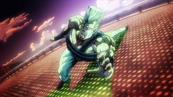

Anexo:Temporadas de Jojo's Bizarre Adventure
 De: La Frikipedia, la enciclopedia extremadamente seria.
De: La Frikipedia, la enciclopedia extremadamente seria.
Nuestro amigo el de las poses fabulosas, Hirohiko Araki, nos ha dejado un legado de grandes proporciones. He aquí el esfuerzo por recopilar sus heroicas aventuras.
Phantom Blood
«¡WRYYYYYY!»
~ Dio alucinándose el vampiro fabuloso
«¡Señor Joestaaar!»
~ Speedwagon gritando cada vez que Jonathan esta en peligro
«¡MUDA MUDA MUDA MUDAAA!»
~ Dio gritando como poseso mientras ataca
En 1880 en Reino Hundido, un pijo retrasado típico de series shonen que salva hembras de que los bravucones quiten la ropa a sus Barbies, llamado Jonathan Joestar (alias Jojo) conoce a su hermano adoptivo llamado Dio, un envidioso pendejo, manipulador y listo como un chimpancé, que luego de arruinarle la infancia se convierte en vampiro. Nuestro amigo Jojo, con ayuda de su lamebotas Speedwagon y Zeppeli su maestro de artes marciales, deberán encontrar a Dio, quien aún vive y planea provocar un Apocalipsis zombi y Dominar el Mundo.
- Jonathan Joestar: Un niño rico justiciero, por contradictorio que parezca. Le llaman Jojo para que no diga su apellido ya que nunca le agradó a su padre. Y éste último, tras adoptar a un muerto de hambre envidioso llamado Dio, convierte la vida de su hijo en un recital de Gay Direction pues el tal Dio en cuestión le quita a su hembra, a sus amigos y a su perro (y lo mete en la basura para que el subnormal de su mayordomo lo rostizara vivo por error): en menos de 24 horas todo lo anterior. El tal Dio en cuestión decide cagarle la vida a Jojo y quitarle la herencia. Sin embargo, Jojo se entera y trata de meterlo preso, pero Dio se pone una máscara de piedra que encontró por ahí y se transforma en un vampiro fabulosamente gay que chupa sangre con estilo y grita "WRYYYYYYY!"
- Después de que el ahora vampirizado Dio matara a el Bigote y quemara su casa, Jojo se encuentra con un viejo italiano con bigote llamado
lo que queda de él) buscando venganza y convirtiendo al barco en un drama de Resident Evil. En un intento por destruirlo, Jonathan vuela el barco con zombies y todo, pero el taradazo olvida (de nuevo) de que para eliminarlo debe estar en la luz del sol. Y así fue como Dio quedó en el fondo del mar jugando con lo que quedo de Jonathan hasta la Stardust Crusaders.
Dio diciendote que le huelas el dedo
- Dio Brando: Amargado envidioso que vivía en un barrio pobre con su viejo borracho abusivo que le sacaba la mierda por cualquier cosa hasta que este no aguantó más y lo mató. Tras esto se va a vivir de colado en la mansión del Bigote, donde conoce a Jonathan de quien se queda prendado al instante, pero como es un puto amargado envidioso, decide cagarle la vida en menos de un día al robarle a su flaca y quemar a su perro.
- Después de ponerse la máscara se dedica a chupar sangre por ciudad, hacer pendejadas, volver homos a sus sirvientes y convertir ciudades enteras en apocalipsis zombies hasta que llega Jojo tras mucho entrenamiento a derrotarlo. Luego de ser biseccionado vivo de una paliza, el desgraciado se salva separando la cabeza del cuerpo, y, con su amigo el chino verde que lo metió en formol, sigue a Jojo hasta el Titanic para buscar venganza y conseguir un nuevo cuerpo, pero fracasa como todos sabemos. También Dio es conocido por sus poses amariconadas, porque tiene un montón de personajes plagiados basados en él y por levantar una gran cantidad de memes (como el ZA WARUDO).
- William Anthonio Zeppeli: Bigotudo italiano con un sombrero fabuloso, maestro en las artes del hamon, entrenado por unos monjes que viven aislados en un templo en el que día y noche se rascan el ombligo para "meditar". Cuando era muy joven, un día estaba en su barco porque su padre quería llevarlo a ver cosas raras por el mundo (tales como chinitos que no trabajan en un todo a cien) y en la expedición encontraron una máscara de piedra. Esa noche el padre se convirtió en vampiro en pleno viaje de vuelta, y masacró a la población total del barco, excepto a nuestro amigo Will que saltó al agua y se salvó por el Sol. Después consigue llegar a una costa y se topa con un tío en un puerto, capaz de sanar hasta la lepra a alguien con solo tocarlo. El tipo luego le dice a Zeppeli dónde aprendió esto (un lugar en no-sé-dónde del Tibet, que en nuestro universo claramente no existe) y el muchacho entonces empezó a tomar clases con un tal Trom Peti quien luego le revela cómo morirá en el futuro. Tras entrenar a Jojo y luchar junto a él, la predicción se cumple y es partido en dos por
Andrómeda unas cadenitas y da su último aliento al fabuloso pupilo.
- Erina Pendleton: Niña mimada que queda prendada de Jonathan porque cuando eran chamacos este la salvó de unos bravucones que querían desnudar a su muñeca Barbie. Después de que Dio empezara a cagarle la vida a Jonathan, este empieza a salir con Erina, tienen citas fresas y otras cursindejadas hasta que Dio le roba a esta su primer beso y eso en la época victoriana es como si la hubieran violado, de modo que le hace la ley del hielo a Jonathan hasta que este se vuelve macho que se respeta años después y ahora si la tipa le hace caso de nuevo. Tras vencer a Dio, Jonathan se casa con ella y se la lleva al Titanic a desvirgarla, luego la cabeza de Dio llega a interrumpirles la diversión, se hunde el barco y solo sobrevive Erina preñada con una bebé cualquiera que encontró. En Battle Tendency sigue viva pero esta vieja y fea y se convirtió en una vieja con tremenda hostia que de todo le da el coñazo a su nieto Joseph.
Battle Tendency
«¡Traje el tequila!»
~ Joseph Joestar cuando se travistió para entrar a un campo nazi
«¡No soy tsundere, pero te odio Jojo maldito idiota!»
~ Caesar sobre su relacion amor-odio con Joseph
«AWAKEN, MY MASTERS!»
~ Wham despertando a Cars y AC/DC (no las bandas, los de los taparrabos)
En 1938 en Gringolandia, Joseph Joestar, alias Jojo y nieto del anterior, descubre que unos nazis secuestraron a Speedwagon en Bigotelandia (pues andaba en unas ruinas de contrabando) y decide ir a salvarlo. Lo malo es que los cabeza de nabo deciden revivir a los Pillar Men, los que crearon la máscara de piedra de Phantom Blood. Tres de ellos (con nombres de bandas rolingas) reviven en Roma y empiezan a buscar una piedrita roja que combinada con una máscara especial los haría inmortales. En eso envenenan a Joseph por imbécil la primera vez que los ve. De modo que el Jojo de turno se pone a entrenar con una vieja con complejo de Tsunade llamada Lisa Lisa y el nieto de Zeppeli, llamado Caesar, que pasaría a ser su puto su compañero para encontrar el antídoto y detener a los exhibicionistas con taparrabo.
Joseph en sus tiempos de prostitución como la Tequila Girl
- Joseph Joestar: El Jojo de turno e hinchapelotas incurable, a diferencia del amariconado de Jonathan (para desgracia de Speedwagon). Su padre murió en una situación inexplicable y misteriosa en la que un zombi de Dio estaba involucrado. Su madre también murió, le dijeron, pero lo que no sabe es que es la vieja con Síndrome de Tsunade. Conoce a un negro llamado Smokey tras salvarlo de unos policías racistas y debe arriesgarse salvando el culo de Speedwagon a quien secuestraron los nazis (sin mencionar sus tiempos como travesti en Tijuana).
- Luego de derrotar a Santana, el que estaba en las ruinas de contrabando, se va hasta Roma para encontrarse con el italiano poser Caesar y entran a unas ruinas en donde hay tres pillar men (Wham, ACDC y Cars) petrificados. Joseph enfrenta a Wham con su genial invento las clacker volley pero fracasa como un inútil y se hace el muerto para escapar. Wham lo atrapa y Jojo arregla un duelo con él, salvándose el culo, pero como lo envenenan por idiota, debe buscar la cura junto a la cincuentona y el italiano poser, con el que parece tener...algo más. Tras la batalla final, obligó a Stroheim a que le pusiera una mano robótica y se casó con Suzi Q, la sirvienta retrasada de Lisa Lisa. En Stardust Crusaders consiguió tener su propio Stand (Hermit Purple, o lianas tentaculeadoras
para las pajas), ya que los Hamon estaban pasados de moda. Mientras que en Diamond Is Unbreakable se va de putas y tiene un hijo bastardo que es el Jojo de turno, pero para entonces ya es un viejo chocho que se cae a pedazos.
- Caesar Antonio Zeppeli: El nieto del Zeppeli anterior, solo que a diferencia de sus machos ancestros, no tiene bigote, de modo que es un tremendo marica. Al igual que su compadre Italia Veneciano es buen italiano, es amariconado y anda con muchas hembras para ocultar su verdadera condición sexual. Como es el alumno de Lisa Lisa, lo hicieron ir a la mala a que sea compañero de Joseph, de quien queda prendado al instante, pero lo niega porque es tsundere. Puede atacar usando burbujas de colores, para hacerlo más trolazo.
- Antes de toparse con Jojo era un bandido más temido que los Corleone, solo que nunca mató a nadie. Su epic fail fue sacar una piedrita de la pared en que los Pillar Men estaban posando para los paparazzis, ya que su padre para evitar que lo hiciera le quitó del camino y fue absorbido por los exhibicionistas de ese muro. Más tarde se revela que es un emo vengador por la muerte de su papi, de modo que busca venganza contra Wham, uno de los Pillar Men que se lo cargó, solo para morir miserablemente y sin siquiera hacerle daño, pero al menos logró mandar su mensaje en burbujas a Joseph como Utakata de Naruto (Hirohiko Araki tiene una máquina para ver el futuro y hace plagios mejor que nadie).
No se dejen engañar, es más vieja que
Tsunade.
- Lisa Lisa: Anciana
plagio de Tsunade que gusta de torturar a sus alumnos para que entrenen más duro que en Saint Seiya y la nave de Kokú con supergravedad combinados. Luego de mandar a los dos a escalar el falo palo aceitado gigante con trampas, les hace ir con un dúo de superhombres para un entrenamiento aún más jodido.
- Los resultados son: un 50% más de fuerza, una mejora en el control del Hamon en un 200% y una reducción de la homosexualidad en un 80% (lo que no garantiza que Dio no les contagie lo gay, pero eso es otra historia). La señora en cuestión es madre de Jojo (y por lo tanto es la bebé que salvaron del apocalipsis zombi en el barco en Phantom Blood), pero su hijo se entera por el final, luego de haberla espiado por el agujero de la llave del baño (y de no ser por Caesar el pobre habria cruzado la línea).
- Rudolf von Stroheim: Un nazi con rango de mayor al que se le para cada vez que mencionan los avances tecnológicos alemanes, aunque los chinos van por mucho más. Este tipo se cree la gran cosa y no es para menos. Arrancó de cuajo un pilar completo (con hombre petrificado y todo) de las ruinas de México de contrabando, y lo dejó clavado en una habitación bien cerrada y equipada lo suficiente para aguantar una patada de Chuck Norris. Hasta ahí todo normal. Pero el infeliz, sin detenerse a medir un segundo las consecuencias, decide alimentar de sangre las raíces conectadas al tipo amarrado al poste, tras lo que el tipo en cuestión que estaba duro como estatua, cobró vida y les dio una paliza a todos. Varios capítulos después que derrotaran a este, Stroheim reaparece como un Termineitor solo para perder miserablemente contra Cars... y luego volver para perder sendas piernas por Jojo.
- Los Pillar Men: Son los supervivientes de una especie antiquísima que solo salía de noche. De ahí su exhibicionismo, pues solían ir desnudos porque en plena oscuridad no se daban cuenta. Ellos nunca envejecen. En un intento por ver la luz del sol sin convertise en piedra, uno de ellos forjó una máscara especial en cuya frente tenían que incrustar la Super Piedra de Aja. La buscaron muchísimo tiempo, pelearon harto y como no la encontraron, para cuando estaba el imperio romano, los tipos decidieron petrificarse.
- De estos hay cuatro, a saber son:
- Santana: Además de despertarlo, Stroheim le puso nombre para variar. Primero parecía un cavernícola inútil hasta que logró pronunciar el apellido del susodicho mayor. Le enviaron un vampiro y lo devoró absorbiéndolo a través del pecho, pero los nazis creían tenerlo bajo control. El tipo se metió en la ventilación doblándose como toalla. Luego se introdujo en la cabeza de un soldado que fue a revisar y masacró a medio equipo. Más tarde se introdujo en Stroheim quien decidió sacrificarse con una granada diciendo piropos militares. Pero fue inútil y con ayuda del sol Jojo tuvo que hacer el trabajo sucio.
- Wham: Un hombre obsesionado con las buenas peleas. Se especializa en usar el viento para hacer pedazos al que le mire feo. De casualidad cuando salió del muro pasó por al lado de un tal Mark al que mató con solo tocarlo, pero Jojo y Caesar se cabrearon y con una super pose decidieron apalearlo. Caesar cayó con solo acercarse, pero como Jojo era duro Wham tuvo que usar con él su tormenta de arena santa. Luego de un entrenamiento más duro que el de Steven Seagal, Jojo consigue cargarse a ACDC tras lo que Wham y Cars se esconden por ahí en una mansión abandonada por Ricky Ricón en Suiza. En esa casucha Wham le dio su paliza a Caesar y tiempo después arreglan con Lisa Lisa la pelea entre Wham y Jojo en un coliseo, con caballos y todo. Wham entonces es abatido de manera épica y queda su cabeza hablando de lo fabuloso que es Jojo durante la mitad de un episodio hasta convertirse en polvo.
ACDC tras quedarse sin
polla brazo
- ACDC: Tipo muy rudo, y el doble de cabronazo. Se leyó bien el Arte de la Guerra, para hacerlo aún más jodido. Le gustó la idea del anillito, así que decidió dejarle el suyo en la garganta. Se especializa en el fuego, de ahí que algunos le culpan de dar fin a la era del hielo con eso del Calentamiento Global, pero esto último lo inventó la prensa para darle un poco más de fama. Este no teme recurrir a cualquier cosa para ganar. Cuando Jojo le sacó un brazo, el tipo se puso a llorar como niño, por lo que distrajo a Joseph para que no pensara en una estrategia.
- Después que Joseph lo hiciera pedazos a base de hamon, justo cuando parecía vencido, sobrevivió su cerebro, adherido a la espalda de nuestro héroe, y luego usó a Suzie Q. como marioneta. A esta casi la matan pero en medio de la confusión el cerebrito salta de nuevo a la espalda de Jojo quien lo deja rostizarse a la luz del Sol.
Además de ser una herramienta para matar
y otros usos, su cuchillo es un instrumento de fabulosidad esplendente. ¿No lo crees?¡Míralo!¡MIRA COMO BRILLA!
- Cars: Este es el más malo de todos. Hace chorroscientos mil años, un día estaba por llegar el carnaval de su pueblo y se le ocurrió la genial idea de hacer una máscara de piedra para ver si podía salir de los subterráneos sin quemarse afuera. Solo consiguió ser más fuerte y tener un hambre como para extinguir a todos los ñus. Muchos individuos de su especie le echaron broncas porque la cosa se estaba poniendo fea y buscaron hacerlo puré. Sin embargo, hizo mierda a todos y se fue con su amigo ACDC a recorrer el mundo para seguir jodiendo, secuestran a dos críos (Wham y Santana), los entrenan y juntos deciden formar un grupo para conspirar y robarse todas las piedritas rojas del mundo a ver si en una de esas les tocaba la Súper Piedra de Aja. Fueron a Roma creyendo que el César la tenía, por lo que se cruzaron al Clan Hamon, pero los miembros de este cayeron como moscas. Sin embargo, Cars y su grupo de malotes al no encontrar la piedra deciden petrificarse durante todo un jodido milenio en una pared. Santana estaba en México ya que para ese entonces ya existían los tacos.
- Luego de que Jojo fuese humillado, mientras Wham y ACDC ponían los anillitos Cars ya tenía planes y quería conquistar el mundo.
- Cuando ACDC controla a Suzi Q, en una de esas le dan una piedra falsa, por lo que él y su compañero Wham se lo reclaman a Lisa Lisa y esta le desafía apostando la verdadera. Luego de que Wham fuese hecho polvo (literalmente), finalmente pelean y el muy sucio usa un doble de riesgo para ganar, por lo que Jojo se cabrea y le hace caer en unos pinchos.
- Stroheim al recate llegó con su lulz ultravioleta para rematarlo, pero fue la peor idea de todas: Cars se puso la máscara y con la piedra que anda a saber dónde la escondió recibió la luz en la cara y digievolucionó en Cars el Perfecto. De ahí en más Jojo recurre a la gran técnica secreta (esa en la que hay que usar las piernas), roba la piedra, y un avioncito nazi el cual hace estrellar en un volcán con Cars y todo, pero el cabronazo sobrevive, luego intenta darle una golpiza Hamon a Joseph pero este pone la piedra en medio, refractando la luz en el jodido volcán, por lo que este en un estallido los manda a volar. Jojo alardeando distrajo a Cars y este en lugar de esquivar unas simples piedritas que lo empujaron va derechito al espacio... el tipo trata de volver a Tierra tirándose pedos de espalda, pero no lo consigue y se queda flotando ahí congelado...
Stardust Crusaders
«ORA ORA ORA ORA ORA ORA!»
~ Jotaro repartiendo hostias
«Rerorerorerorero»
~ Kakyoin cada vez que come cerezas.
«ZA WARUDO»
~ Dio Brando cada vez que respira en una pelea.
En 1989, el nieto de Joseph (ahora un viejo chocho), Jotaro Kujo (alias Jojo, qué novedad), descubre que tiene un poder llamado "Stand". Ese poder consiste en un fantasma que controla a voluntad y que de ser atacado ese daño también afecta a Jotaro. Algo similar a lo que ocurre con el cerebro de dos personas inteligentes al escuchar a Gayber. El depravado de Dio de Phantom Blood sigue vivo y coleando y con el cuerpo y la verga de Jonathan. Como la mamasita de Jotaro se está muriendo, el nuevo Jojo, el viejo Joseph y unos amigos suyos que están de relleno, entre ellos un adivino egipcio piromaniaco y uno que se alegra cada vez que ve a la mentada mujer, van a pasear por Otakulandia hasta Egipto a buscar a Dio y salvar a la vieja de Jotaro, pero obvio que se encuentran con cada bala loca y perdida en el camino.
- Jotaro Kujo: Joven rebelde de 17 años que puede no saber la raíz cuadrada de 2 pero sabe deformar geométricamente tu cara (y secretamente le gusta ver Animal Planet y Discovery Channel) y se metio en la cárcel por ser "demasiado peligroso". Su stand es Star Platinum, un tipo que da golpizas más rápido y más preciso que Tyson y Rocky combinados. A pesar de ser el más mala hostia del grupo es el unico que no sale virgen al final.
- En Diamond Is Unbreakable tiene que acompañar al ahora viejo chocho Joseph a entrenar al nuevo Jojo, que es el hijo bastardo de este. En Vento Aureo cuando se entera que el nuevo Jojo es el afeminado hijo de Dio, manda al enano Koichi a espiarlo para saber si es de los buenos o trolo y malote como su padre, sin contar que el rubiecito afeminado le terminaría robando su equipaje y convirtiendo su billetera en una rana. Mientras tanto, en Stone Ocean tiene una hija ninfómana llamada Jolyne con la cual se lleva mal porque entre peleas y Stands everywhere, no tuvo tiempo para andar con la familia. Después que a esta la metan presa, este trata de sacarla, pero no contaba con que le robarían su Stand, provocando que se quede en coma por media serie hasta que salvan su Stand. Luego se van con Jolyne y compañía a detener a Pucci, el cura gay puto de Dio, pero todos mueren miserablemente menos el niñato pero esa es otra historia.
- Mohammed Avdol: Egipcio que se creía invencible con el Tarot hasta que llegó el degenerado de J. Geil. Su stand es Magician's Red, un Condorito gigante que lanza fuego. Es peor que el jodido Pyro, ya que puede dividir las llamas y moverlas a donde quiera. Pues como Polnareff es
afrancesado, tuvo amistad con él y hasta le salvó la vida pero tras lograrlo el infeliz fue clavado por atrás por la momia de espejos y el vaquero le remató de un pistolazo. Resulta que falsificó su muerte y resucita capítulos después, solo para volverse a morir, cortesía de Dio.
- Noriaki Kakyoin: Este payaso con un fetiche por comer cerezas es un estudiante compañero de Jotaro. Su stand es Hierophant Green, un tipo verde que lanza mocos corrosivos, capaz de meterse por donde no le da el sol a su víctima para controlarla. Fue a buscar a Tutanjamón en Egipto pero en el recorrido se topó con Dio que lo sedujo con un estrip tiz, para despues obligarlo a matar los protas. Al sacarle el bicho de la frente que le taladraba el cerebro, volvió a ser alguien normal, ahora excitado por la madrecita de Jotaro.
 Jean Pierre haciendo una pose testosterónica.
- Jean Pierre Polnareff: Francés bipolar, un primo de Benimaru. El stand de este es Silver Chariot, un caballero con armadura medieval (resistente a egipcios piromaníacos) que da estocadas con la espada ropera. Se le dio por la venganza ya que el cabronazo de las dos manos derechas se violó a su hermana para luego matarla. El tipo se hace fan número 1 de su héroe el negro de las cartas pero este se le muere. A pesar de su estupidez, es el unico del grupo (ademas de los Joestars y su plot armor) que sobrevive al final.
- Reaparece en Vento Aureo, pero ahora es un vejete lisiado, lo matan rápido y luego pasa a ser una tortuga y mascota de los trolos de Passione.
- Iggy: Perrete cabezón que le gusta mascar chicle y lanzarse pedos en la cara del menso Polnareff. Su Stand es The Fool, que le permite controlar la arena. Le gusta putear a todo el mundo y no hace gran cosa, pues casi siempre se fuga en medio de las peleas. La unica vez que decide acojonarse es para salvar a Polnareff quien estaba peleando contra la loca esa de Vanilla Ice, pero muere miserablemente.
- Dio Brando: Tras robarle el cuerpo a Jonathan, el vampiro cabrón volvió más afeminado que nunca, pero cuidado que es tan afeminado como poderoso. De paso se consiguió un Stand chulo que puede congelar el tiempo para lanzarte cuchillos, trozos de mierda, una aplanadora gigante y un nokia, sin piedad alguna. Pues como sus secuaces la cagan a la Equipo Rocket, Jotaro lo pulveriza luego de hacerse el tonto.
Diamond Is Unbreakable
«DORARARARARARA!»
~ Josuke siendo original con su grito para repartir hostias
«¿¡Que rayos me ven!?»
~ Koichi quejándose sobre su Síndrome de Keitaro Urashima (en resumen, es deseado por una yandere violadora, un mangaka emo y hasta el amargado Jotaro)
«...Actualmente no tiene novio, sus medidas son 82-57-84, tiene un lunar a un lado de su pezón izquierdo, su primera menstruación fue en Septiembre cuando ella tenía 11...»
~ Rohan demostrando que le saca provecho a su Stand
En una ciudad llamada Mierda Morioh en el 1999, un posero con pompadour llamado Josuke Higashikata (alias Jojo. de nuevo), hijo bastardo de Joseph (el muy degenerado se fue de putas) tiene que resolver un misterio a lo Sherlock en el que un asesino llamado Yoshikage Kira que tiene un fetiche por las manos de mujeres que lo pone cachondo la Mona Lisa, gusta matar putas para cortarles las manos. Para rematar el tipo en cuestión tiene un Stand. De modo que el Jojo de turno, un palurdo que es acosado sexualmente por una yandere, un mangaka voyeur con un fetiche por este palurdo y un bruto que quiere ayudar a su viejo porque lo maldijo el pinche Dio tienen que detener a este asesino fetichista sin saber que años después vendría su copia homosexual.
Segun los haters fans, esta es la temporada más mierda de todo Jojo, pero como es la favorita de Hirohiko Araki y como Rohan es el unico personaje rescatable, aun la ponen en los videojuegos.
- Josuke Higashikata: El hijo bastardo de Joseph después que este se vaya de putas por
Mierda Morioh. Es un delincuente roba-carteras y billeteras, y tiene un peinado horrible setentero, pero no se lo digan, que te rompe las piernas (porque cuando era chamaco, una vez se enfermó y casi muere, pero gracias a un delincuente juvenil que tenia ese peinado feo pudo llegar al hospital). Su Stand es Crazy Diamond, que le permite regenerar lo que sea, de modo que se le da por reventar a ostias a la gente para luego regenerarlos y volverlos a pegar. Le tiene bronca a Joseph porque es tan viejo chocho como el papá de Homero Simpson, pero tras salvar a una bebé que tenia un Stand que la hacia invisible, se llevan mejor (aunque aun asi le robo la billetera al final).
- Koichi Hirose: Amigo de Josuke y enano de pacotilla que padece Síndrome de Edward Elric (hasta tiene al seiyuu), pero después se ve que en verdad padece el Síndrome de Keitaro Urashima, que hace que sea acosado sexualmente por degenerados, entre ellos el amargado Rohan y la yandere Yukako, quien quiere zumbarselo para quitarle el palurdismo (aunque al final si lo logra). Al principio es el típico normalfag inútil con un Stand de pacotilla, pero como el plot lo demanda, se vuelve menos marica y hasta consigue hacer que su Stand digievolucione. Mientras Josuke se dedica a lanzar hostias a diestra y siniestra, Koichi es el narrador y el que se encarga de befriendizar al casting. Su Stand es Echoes, que son tres chibi Cell que hacen sonidos. Ademas su cabello cambia de color como si fuera saiyayin. A pesar de que es un inútil como pocos, los mas mala hostia (véase Jotaro y Rohan) parecen tenerle un ...cariño especial.
- En Vento Aureo reaparece de contrabando en Mafialandia para espiar a Giorno a pedido de Jotaro y aprende italiano sin clases por cortesía de Rohan, pero el hijo gay de Dio convierte su equipaje en una rana y lo deja varado, de modo que Jotaro ordena la retirada.
- Rohan Kishibe: Dibujante de mangas amargado y voyeur quien hace muchas rarezas para logras hacer dibujos realistas, como despachurrar tarántulas vivas o dibujar palurdos (véase Koichi). Este y otro enano de relleno se meten a su casa para conseguir un autógrafo, pero el degenerado les aplicó su Stand para leerles las mentes y quedó impresionado al ver que Koichi era un tremendo palurdo, de modo que vino Josuke y le sacó la mierda porque insultaron a su peinado. Poco después regresa y se une al grupo, ahora excitado por el enano rubiecito.
- Su Stand es Heaven's Door, que es como un canijo con Death Note, solo que en vez de matar gente, se puede controlar a la gente y transformar a la gente en libros, donde puede ver sus recuerdos, detalles reveladores como Stands, costumbres, enfermedades, medidas, desde el ancho de su más delgado vello nasal hasta la medida de
la polla zapato que calza. Le cae mal Josuke porque cree que es un idiota, le quemó la casa con su coleccion friki adentro y solo es parte del grupo porque quiere material para sus comics y se inspira con Koichi (ya que su palurdismo es igual al de los protas de animes y eso es rentable) y quiere vengar la muerte de su niñera, quien ahora es un fantasma que pena con su perro. A pesar de su actitud de mierda, es el personaje mas popular de Diamond Is Unbreakable y sale en varios one-shots de Araki donde se da la vuelta al mundo para conseguir inspiración para sus comics.
- Okuyasu Nijimura: Otro amigo de Josuke. Su hermano mayor se la paso dandole Stands a todo el mundo usando flechazos para que maten a su padre, quien fue infectado por el trolazo de Dio y es un monstruo escamoso, hasta que en una de esas un Jebi que tenia un Stand eléctrico se cargó a su hermano. Es bastante idiota e inútil y su Stand es The Hand, con lo que puede borrar lo que toca, aunque como es bruto, no le saca provecho a su Stand. También se la pasa lamentándose y chillando porque no puede perder la virginidad y varios prefieren hacerlo con el enano.
- Yoshikage Kira: Que no, no es ese otro Kira. Un asesino en serie quien tiene un fetiche por rebanar manos a cada mujer que se encuentre por ahi, porque cuando era peque y vio a un cuadro de la Mona Lisa, se corrió en todo el sentido de la palabra. Su Stand es Killer Queen, que le permite explotar a sus victimas para no dejar rastro. Se pasa quejandose a cada rato de que quiere tener una vida normal, pero se refiere a que quiere matar a todas las hembras que quiera sin que traten de meterlo entre rejas.
- Después que Jojo y compañía descubren su identidad, este se va a una cirujana plástica y mata a un sujeto que pasaba por ahi para cambiar de cara con otro sujeto. Por un tiempo vive con la familia del sujeto, hasta que el hijo autista de esa familia descubre lo que pasa. De modo que Kira usa al autista como escudo en una pelea contra Jojo, pero no contaba conque el niñato terminaría zafándose y Josuke le haria tal fatality que lo mandaría a que lo atropelle una ambulancia. En los one-shots se revela que ahora es un fantasma amnesico que pena y se quedo sin Stand.
Vento Aureo
«¡MUDA MUDA MUDA MUDAAA!»
~ Giorno Giovanna copiandole a su viejo
«¡ARI ARI ARI ARIVEDEEEERCI!»
~ Bucciarati luciendo grosamente gay mientras ataca con su Stand
«¡VOLA VOLA VOLA VOLARE VIIIIA!»
~ Narancia tratando en vano de copiarle a Bucciarati
En Mafialandia en el 2001, Giorno Giovanna (alias Jojo o GioGio, con estilo), el maricón hijo de Dio (ya que este se fue de putas en Stardust Crusaders) quiere ser como El Padrino, Vito Corleone y Robin Hood de modo que se une a un grupo de mafiosos exhibicionistas llamados Passione. Le toca unirse a un grupo de trolos que usan Stands (entre ellos un hermafrodita que usa bordes a lo Yukari Yakumo, un policia retirado, un pandroso que odia el numero 4 y un enano histérico) y que deben proteger a la hija del Padrino, una fresa fan de las Spice Girls que anda por ahí vestida como puta ya que este la quiere matar para que no descubran su identidad.
- Giorno Giovanna: Emo de profesión e hijo bastardo de Dio. Su verdadero nombre es Haruno Shiobana, pero al mudarse a Italia se lo cambio a algo con mas estilo. Vive amargado porque su madre y padrastro le sacaban la mierda de peque y no conoció a su verdadero padre (tampoco es que sea algo bueno...), de modo que quiere ser como El Padrino para repartir justicia por las malas y cuando despierta su Stand, su peinado emo se vuelve fabulosamente rubio y usa mariquitas en su ropa, para hacerlo mas trolazo. Su Stand es Golden Experience, que le permite convertir cualquier cosa en una planta o animal, por ejemplo una pistola en un platano, por mas degenerado que suene. Mas tarde digievoluciona al Golden Experience Requiem que es el equivalente a un puto Deus Ex Machina.
- Bruno Bucciarati: A pesar de su apariencia de hembra, es el jefazo de uno de los grupos de Passione y es conocido por dejar las caras baboseadas a la gente para saber si mienten (pobre Giorno). Su Stand es Sticky Fingers, que hace aparecer cierres por los que el aparece y desaparece, como los bordes de la vieja de Yukari Yakumo en Touhou. Giorno lo convence para que lo ayude a ser el nuevo Vito Corleone y este solo acepta al enterarse que el jefazo de la mafia quiere matar a su hija Trish por miedo a que lo delate, de modo que por hacer una buena acción y en el nombre de las tetas de Trish todos (menos Fugo) van a salvarla.
- Posteriormente se sabe que tras la primera pelea con Diavolo se murió, pero gracias al Stand de Giorno, revivio como zombi por un tiempo hasta el final de temporada. También roba cámara a Giorno de vez en cuando, puesto que es mas groso que el emo gay.
- Guido Mista: Pandroso que tiene un trauma con el numero 4 porque cuando era chamaco la gata del vecino pario cuatro gatos y uno de ellos le sacó la mierda, de modo que rompe a tiros todo lo que tenga cuatro en su campo visual (como a Los 4 Fantásticos o al Cuarto Hokage). Lo metieron preso por matar a unos violadores, pero Bucciarati le salvó el culo. Su Stand es Sex Pistols, que son siete chibis piromaniacos que disparan y comen pizza en su tiempo libre, pero según el son 6, por su trauma con el 4. Usa un gorro ridículo (ya que su peinado es genérico) y según Trish, apesta a mierda. Parecia tenerle ganas a Giorno (posiblemente por sus 3 cornetas en la cabeza) pero al final tras hacerse este el Padrino, decide desvirgarse a la puta de Trish.
- Narancia Ghirga: Enano raquítico muerto de hambre que tiene cara y voz de niñato, pero es mas viejo que Giorno. Ya que es un provinciano pobre, no acabó la escuela primaria y no sabe ni la tabla del 1, de modo que todos gustan tomarlo por culo ademas que es el putito de Bucciarati. Su Stand es Aerosmith, un avion de juguete que dispara balas pero nunca da en el blanco por bruto. Tras aguantar abusos por ser mas debil que un caniche y no saber cuanto es 1 + 1, acompaña al grupo a salvar a Trish y al cojudo se le ocurre levantar el deathflag que si sobrevive al final de la historia, volvera a su pueblucho a acabar la escuela y en eso aparece Diavolo el malote y lo mata miserablemente.
- Leone Abbacio: Un ex-policia corrupto recogido por Bucciarati y es otro de sus putitos. Su Stand es Moody Blues, que te muestra toda la peli de tu vida, lo que es recontra inútil porque cualquiera lo ataca mientras enseña su grabación. De modo que es el primero en morirse de los trolos.
- Pannacotta Fugo: Otro mas del grupo de trolos. No hace gran cosa, pero gusta sacarle la mierda a Narancia por no aprenderse la tabla del 10. Después que los trolos deciden traicionar al Padrino y salvar a Trish, este se va del grupo pues no quiere traicionar al jefazo, de modo que sobrevive. Ademas tiene su propia secuela en la que se muestra que pasó con el después (nada muy importante, pero logro hacer digievolucionar a su Stand). Su Stand es Purple Haze que suelta un virus capaz de cargarse a quien sea, pero se muere con la luz del sol.
- Trish Una: Una pija exhibicionista que resulta ser la hija del Padrino. Hace de la damisela en peligro, puesto que Diavolo manda a su escuadrón de trolos a matarla porque es un pinche paranoico, pero Bucciarati decide hacer del héroe y traiciona al jefe para salvarla, de modo que ella se une al grupo, y
participa en sus orgías se consigue su propio Stand, para demostrar que es inutil. Es bastante puta, pues ha coqueteado con medio Passione (menos con Giorno y Abbacio), parecía tenerle ganas al hermafrodita de Bucciarati y tras morir este tuvo que conformarse con el pandroso Mista, por mas mal que huela. Su Stand es Spice Girl, que le permite ablandar todo hasta la polla mas dura.
- Diavolo: Un tio paranoico y bipolar que es el papi de la mafia y el papá de Trish. Su otra personalidad es Doppio, un gilipollas bizco que tiene un fetiche por los teléfonos. Padece paranoia y no quiere que nadie sepa quien es, de modo que le pide a su escuadrón de trolos que mate a su caliente hija, por miedo a que cuente quien es (y esta ni siquiera lo conoce). Su Stand es King Crimson, que es un Stand con dos caras que avanza o retrocede el tiempo pero no es tan groso como Dio y su ZA WARUDO. Tras cargarse a casi todos los trolos, Giorno se encabrona y le aplica el Golden Experience Requiem para que se muera una y otra vez.
Stone Ocean
«¡ORA ORA ORA ORA ORAAA!»
~ Jolyne Kujo copiandole a su viejo
En Gringolandia de nuevo en el 2011, a la putisima y ninfomana hija de Jotaro, Jolyne Kujo (alias Jojo, a la mierda que no se cansan?) la culpan de un asesinato que no cometió ya que uno de los putos de Dio llamado Enrico Pucci la quiere matar (porque en una serie llena de machos, testosterona y poses gays fabulosas como Jojo no se necesitan mujeres). De modo que Jolyne descubre que tiene un Stand para variar y junto a sus compañeras de prisión, un Stand que habla, un shota no tan inútil y un travesti que le tiene ganas tienen que detener a Pucci quien planea ocasionar un Tercer Impacto y convertir el mundo en Diolandia. Ademas, los Stands ahora vienen en CDs. Aunque cabe mencionar que fallan miserablemente, si se logra el Tercer Impacto, todos mueren menos el shota y se resetea el mundo ¡Por eso es que no ponemos mujeres en series de machos!
- Jolyne Kujo: Ninfomana degenerada que el gay de Pucci la mete presa por algo que no hizo en su plan de masacre hacia los Joestar. Su Stand es Stone Free, que ataca con lianas. A pesar de pajearse constantemente y querer ponérsela a cualquier cosa que tenga polla, es una buena persona, pero a nadie le importa. Su papá es Jotaro, a quien le tiene bronca porque nunca estuvo en casa, pero despues que este quede en coma decide salvarlo. Muere como todos en la pelea contra Pucci y su versión alterna es una pija llamada Irene, quien anda con el travesti.
- Ermes Costello: Una negra amargada que al comienzo le tiene bronca a Jolyne porque esta se pajea constantemente y sacude la cabeza, pero luego se hacen amigas. Esta presa porque busca encontrar al tipo que mató a su hermana que está en las rejas. Su Stand es Kiss, una cosa que esta cubierto en stickers de besos y depende de donde se pegue el sticker, copia el objeto y si se despega explota. Se muere con todos en la pelea contra Pucci y en el mundo alterno la botan a patadas de un bus por pagar con un billete.
- Foo Fighters: Una Stand inútil que Pucci lanzó al mar y tras caer se vuelve homicida, pero despues que Jolyne y Ermes la reventaran a ostias, se hacen amigas. Tiene poderes de alga y si no consume agua diariamente se muere, como si fuera su droga. No hace gran cosa y muere inútilmente.
- Narciso Annasui: Travesti hermafrodita que se une al grupo, pasando a ser uno de los intereses humedos de Jolyne. Tiene un fetiche por desarmar cosas, como autos y cajetas y que lo metieron preso porque quiso desarmarle la cajeta a su hembra de turno, pero se le pasó la mano. Tras conocer a Jolyne queda prendado de ella y se une al grupo con la esperanza de desarmarle la cajeta, pero siempre es humillado por el amargado Jotaro. Su Stand es Diver Down, con el que se mete a cualquier lugar. Muere junto con el resto del grupo inútilmente y cuando se resetea el mundo, su version alterna se llama Anakiss y es el flaco de Jolyne, ya que por fin le desarmó la cajeta.
- Weather Report: Un grandulón autista que tiene amnesia y solo ayuda a Jolyne porque el niñato Emporio se lo dijo. Ayuda a Foo Fighters con su sobredosis de droga, digo agua, con su Stand Weather Report (valga la redundancia) que cambia el clima. Se revela que en verdad es el hermano gemelo de Pucci, separados al nacer por una vieja muerta de hambre que se le murió su hijo. Tras salvar de que unos vagos se follen a una tal Pearla, logra salir y follarsela, pero la tipa es hermana de Pucci y por lo tanto es incesto. Pucci se entera y para separarlos, manda a unos sicarios racistas a que les saquen la mierda, pero se les pasó la mano y mataron a la tia. Luego busca venganza contra el pinche Pucci, pero este le hace perder la memoria y lo mete preso porque si. Tras recordarlo todo, se le quita el autismo y se vuelve todo un cabrón, quiere vengarse pero por culpa de la tarada de Jolyne lo matan. Sin embargo, su Stand lo tenía Emporio, con el cual el niñato uso para cargarse a Pucci en el mundo alterno. En el mundo alterno sigue siendo un grandulón autista.
- Emporio Alnino: Niñato de relleno que viste como jugador de baseball y gracias a su Stand, Burning Down The House, vive de colado en la prisión. No hace mucho, excepto ser el tipico niñato perro faldero que nunca falta en Jojo y ayuda a Jolyne ya que se conoce la prisión de memoria. Después de que Pucci se carga a todos al final y reseteara el mundo, solo el sobrevive y usando el CD de Weather Report, consigue cargarse a Pucci y termina perdido en un mundo alterno donde Jolyne es pija y esta comprometida con el rompecajetas, terminando el pobre Emporio peor que un emo, puesto que ya nadie se acuerda de lo que pasó.
- Enrico Pucci: Un cura bien rarito y bien trolo que maneja la prisión donde tiene encerrada a Jolyne porque quiere cagarle la vida a los Joestar, ya que es uno de los esclavos sepsuales de Dio (con quien se llevaba demasiado bien) y busca venganza porque lo mataron y para lograrlo tiene un ejercito de raritos que son mas hijos bastardos de Dio. Tiene muchos Stands en CDs que ya perdimos la cuenta, pero su Stand mas fuerte es Stairway to Heaven, que provoca un ZA WARUDO descomunal que resetea el mundo, ya que Pucci quiere convertirlo en Diolandia.
Steel Ball Run
«¡ENSEÑAME EL SECRETO DE LAS PELOTAAAAAS!»
~ Johnny Joestar rogandole a Gyro que le enseñe el secreto de como disparar pelotas por los dedos
«¡Nyo ho ho ho!»
~ Gyro riendo como trolazo
«¡DOJYAAN!»
~ Valentine apareciendo
En una linea de tiempo alterna en 1890, ya que el mundo se reseteo por culpa de la inutilidad de Jolyne. Gyro Zepelli (un trolo con la capacidad de disparar pelotas) viaja a Gringolandia para una carrera de caballos llamada Steel Ball Run, donde conoce y queda prendado de un Jonathan alterno llamado Johnny Joestar (Jojo otra vez) que aquí es un güero montador de caballos lisiados que también quiere aprender el truco para aprender a disparar pelotas por los dedos. Ambos se meten en el concurso de caballos, donde también están una machona y un Dio alterno llamado Diego (menos pendejo que el famoso Dio de las temporadas anteriores), hasta que descubren que todo es un complot del presidente de Gringolandia quien quiere conseguir un cadáver que da superpoderes, creyéndose el cuentito de que era el de Jebús.
- Johnny Joestar: Es un Jonathan de un mundo alterno, solo que ahora se ve mas afeminado y es mas pendejo. Se alucinaba el mejor corredor de caballos hasta que quedo lisiado. Tras conocer a Gyro y ver su habilidad de disparar sus pelotas, este quiere aprender también porque el plot lo demanda y es el prota. Su Stand es Tusk, que le permite disparar sus uñas. Al igual que todo el mundo quiere el susodicho cadáver que entregan de premio en Steel Ball, tuvo sus momentos con Gyro (quien se muere, como buen Zeppeli que es) y de vez en cuando le dan instintos asesinos.
- Como se muestra en Jojolion, al final se casó y desvirgo a una Erina alterna que ahora es japonesa y tuvieron un hijo pero esta iba a morirse de sida, de modo que por curarla, le pasó el sida a su hijo por accidente así que para salvarla Johnny se pasó el sida y se murió.
- Gyro Zeppeli: Un Zepelli alterno solo que este es una loca desenfrenada que le gusta reírse mariconamente ("Nyo ho ho") y le gustan los peluches. Se metió en el Steel Ball Run porque quiere salvar el culo de un niño al que condenaron a muerte por algo que no merecía. Puede disparar pelotas, cosa que también le enseñó a Johnny, con quien tiene una relación especial. Cabe decir que como buen Zepelli que es, muere al final de la serie de forma grosa y si logra salvar al susodicho chibolo (quien murió de una enfermedad venérea años después, pero esa es otra historia).
- Diego Brando: Alias Dio. Como su nombre indica, es un Dio de un mundo alterno, solo que este es menos mierda que el original, ya que vivía con su madre en vez del viejo borracho. A pesar de todo, sigue siendo un puto amargado envidioso ya que vivía junto a su vieja como asistente en una granja tercermundista pero como la vieja no quiso tirar con el dueño del local, este les dejó sin comer y la vieja se partió el lomo para alimentarlo hasta que se murió. De modo que quiere el cadáver de Jebús para Dominar el mundo. No tiene el ZA WARUDO, pero ahora tiene al Scary Monster, que es un Stand que lo hace tener una cola de dinosaurio con su nombre (así o mas egocéntrico, el pinche Dio), tragar todo tipo de carne y puede oler el café Starbucks a 10 kilómetros de distancia. Sin embargo, ya que no es el groso todopoderoso Dio original, muere miserablemente arrollado por el tren de Gantz sin siquiera habiendo derrotado al malote de turno. Luego el presi trae otra versión para que termine el trabajo del Diego anterior, esta vez con su ZA WARUDO con el que logró su meta para variar. De todas formas se muere por culpa de su otra cabeza
- Hot Pants: Una machona que solía ser una monja de Bible Black ya que cuando era chamaca, mato a su hermano al colocarlo como carnada para escaparse de un oso que quería comérsela, la muy puta. De modo que quiere ganar la carrera de caballos de Steel Ball Run para conseguir el cadáver y que la perdonen por sus pecados, que mierda. A pesar de andar vestida de rosa, con ropa floreada y con pantalones ajustados que le resaltan el culo, los mensos de Johnny y Gyro pensaban que era hombre, aunque no los culpen, que en el mundo de Jojo todos los machos son afeminados. Tras un momento caliente con Diego, ambos van a detener a Valentine, pero no contaban conque este haria que a Diego lo arroye el tren y que a Hot Pants se le metan insectos por el culo hasta morir ensartada. Su Stand es Cream Starter, un spray de lefa que convierte todo en carne.
- Funny Valentine: Presidente de Gringolandia. Cuando era chamaco, perdió a su padre en las guerras civiles, de modo que quiere el cadaver para que el pais gringo sea la potencia mundial, de modo que junto a su caliente y bisexual esposa forman la carrera de Steel Ball Run y manda esbirros a que le consigan el cadáver. Su Stand es Dirty Deeds Done Dirt Cheap, que viaja por las líneas de tiempo alternas (a la cual saca provecho, pues originalmente era un gordo feo, pero cambió de puesto con una versión alterna suya mas atractiva).
Jojolion
Continuan las lineas de tiempo alternas en las que los personajes desde Phantom Blood hasta Stone Ocean son diferentes. Resulta que ahora Josuke no es un pompadour histerico, sino que ahora es un marinerito de cuatro cojones que tiene amnesia. Una puta retrasada llamada Yasuho (la version alterna del enano Koichi) lo encuentra en un basurero en pelotas y lo lleva a su casa donde le pone el nombre de su perro, porque es de lo más normal llevarse a marineros de cuatro cojones a las casas. Ahora deben buscar pistas para que recupere la memoria, mientras se encuentran con medio casting del show que ahora son diferentes a como los recordábamos e intentan buscar la cura para el sida.
- Josuke Higashikata: Un Josuke de un mundo alterno, solo que no tiene peinado ridículo y es un fenómeno rarito que tiene dos lenguas, cuatro cojones y cuatro ojos, sin mencionar que duerme como emparedado, con el colchón encima como en ese episodio de Bob Esponja. No tiene recuerdos de su pasado y es medio retrasado, de modo que la palurda debe ayudarlo a cada rato. Su Stand es Soft and Wet, que son burbujas que toman cualquier forma de lo que toquen. Se revela que es tan rarito porque es la fusión de un Yoshikage Kira alterno y de alguien mas que no se sabe.
- Yasuho Hirose: Un Koichi alterno, solo que esta es mujer y no padece enanismo. Se dedica a hacer de narradora y ser el interes
humedo de Josuke. Puede pasarse la lengua por el codo, es media palurda y medio casting se babea por ella, incluidos los degenerados. Su Stand es Paisley Park, que sirve de GPS.
- Norisuke Higashikata IV: Un viejo que adopta a Josuke con el fin de que le sirva de perro guía a su hija cegatona y caliente. Tiene un montón de hijos y así el árbol familiar de este tipo es enorme en donde todas las cabezas de familia se llaman Norisukes Higashikatas, se dedican a plantar drogas y venderlas en todo el mundo. Su antepasado participó en la carrera de Steel Ball Run, desde entonces por alguna razón sus primogénitos tienen sida y tienen que pasárselos como lo hizo johnny para que la prole no muera.
Autor(es):
- Fordus
- SakuraMiya
- Marcosantinos
- SA Pereda
Frikipedia 2005-2016, Licencia
GFDL 1.2 - Extraído por FrikiLeaks